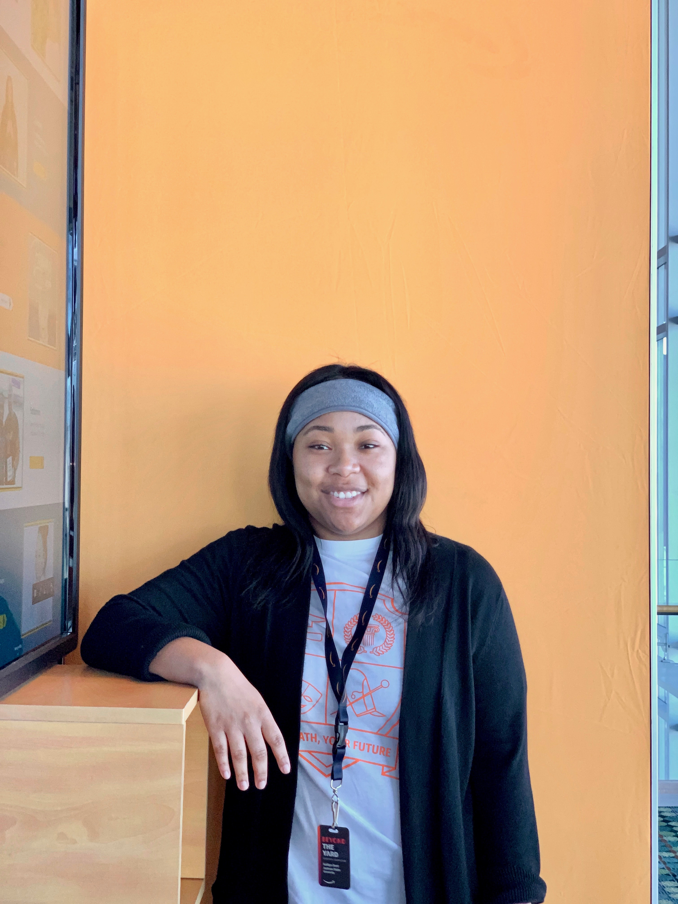

Kaitlyn Dent
About Me
Hello! I'm Kaitlyn Dent. A rising senior at Jackson State University majoring in Computer Science. I'm from Hattiesburg, MS. I enjoy music, sports, travelling, and spending time with family. I'm an apsiring software enineer practicing coding often so I will be ready for software development work once I graduate!
Welcome to my portfolio.
Click here to get a random message:
Work Experience
June 2019 - August 2019
Summer Intern/Naval Information Warfare Center Philadelphia, PA
- Worked on a team to develop a productivity webapp named Scryber; Scryber allows users to print repetitive information one time across multiple documents; Project is open source and available to download on Github.
- Used HTML5, CSS, and JavaScript to create the design of the webapp and adjust alignment issues
- Used C# to implement workflows in Scryber
- Built this webapp using .NET Core framework
Activities
- Hackathon – Participated in the 2019 HBCU Battle of the Brains Competition; worked with a team to create a NFL Trading Card App using Python
- NSBE (National Society of Black Engineers)
- Served as Vice President of Jackson State University’s ACM-W
- Honda Campus All-Star Challenge Quiz Bowl Team (HCASC
- Jackson State's Orchestra
Volunteer
- Temple University Compute-STEM camp that focuses on creating pathways for under-represented and under- resourced 7th and 8th graders in the local community of Philadelphia by introducing them to coding, virtual reality (VR) and real world applications
- Played holiday music on my viola for Bedford Care Nursing Home Residents in Hattiesburg, MS
Awards
- Dean's List Scholar
- Grace Hopper Celebration Scholar 2018